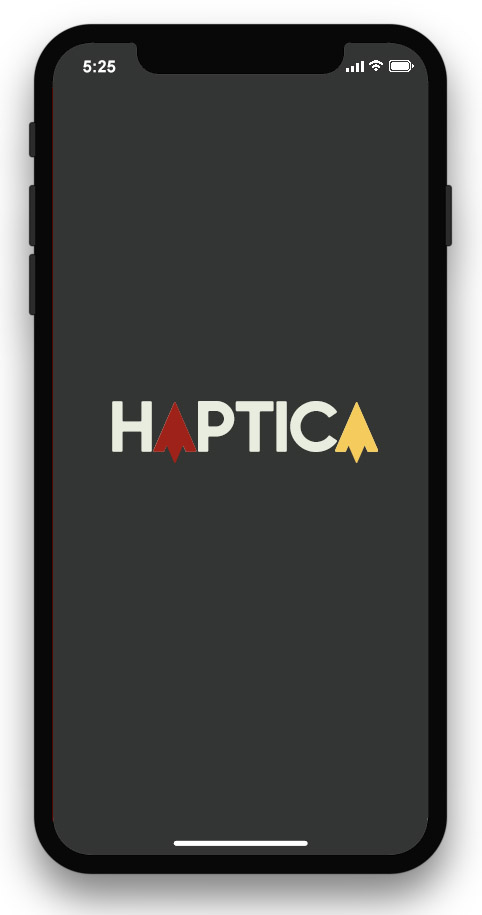
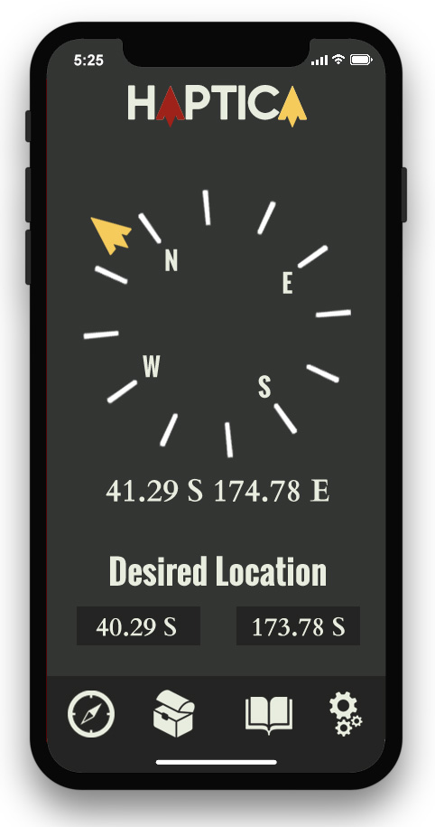

The basic premise of this app is to provide users with an alternate, user-friendly, and physically interactive method of getting from A to B. The app will achieve this by taking both current location and desired location and guiding them to the location in the form of a compass. This compass will provide haptic feedback in the form of vibration information to let the user know whether or not they are progressing in the right direction.
The essential difference between this app and apps in the current market will be the interactive nature of the app and the more the offline nature of the app.
The app will also be bolstered engagement with secondary features such as geocaching, which will take advantage of the apps interactive format to provide a fresh experience for people interested in geocaching. There will also be local message boards for people interested in Geocaching and other outdoor activities to organize meetups, events, and share information.

Here are some useful articles which detail how different details of the app will function, prove the validity of the basic features of the app, and how they can be implemented in the app.
The app will primarily target people interested in hiking, navigation, and geocaching. The app will be useful for these groups because of the offline functionality, and the little data needed to be stored offline. This will make traversing unmapped/no cell data areas while being user-friendly and intuitive to use. Geocachers will be attracted by the new experience this app offers and the slight change in the formula that could add new life to an already exciting outdoor activity.
There is also the possibility to make an engaging and functional navigation tool for the visually impaired. With current phones being so focused around visuals and the alternatives for the visually impaired being predominantly audible, this app could provide a new system for them to interact with. Some research into the visually impaired way of life and their needs would be required to dutifully embrace this idea, however.
The best medium for this tool is as a free app, primarily for the iPhone. While a separate device could solve possible battery issues, I think it would create more problems than it solves. Creating a separate device would limit the reach of the device and make it very niche, and if it is to target an audience bigger than hikers and such, than a separate device would be clunky and hard to market. Also, phones have inbuilt GPS's, Compass's, and Accelerometers which is nearly all the functionality needed. Furthermore, there is proof (in the research) that these things can work offline with surprising accuracy.
